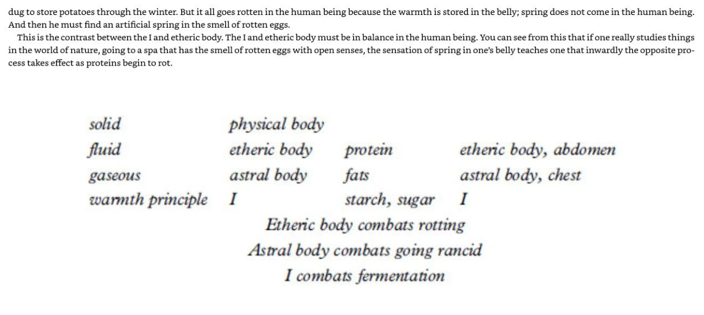
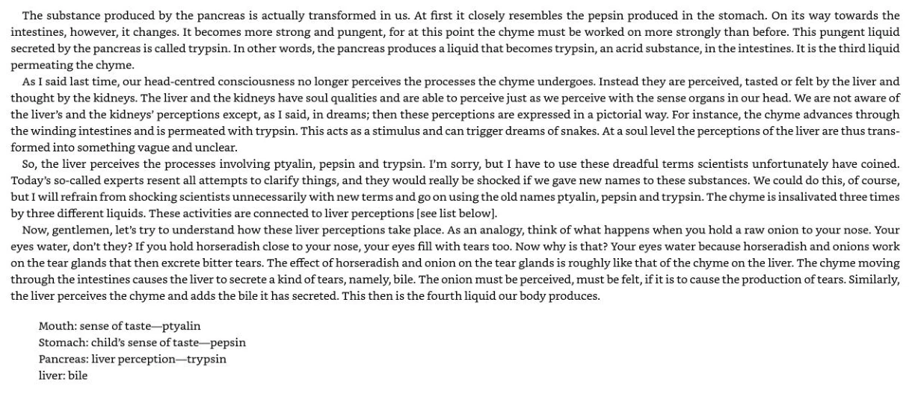
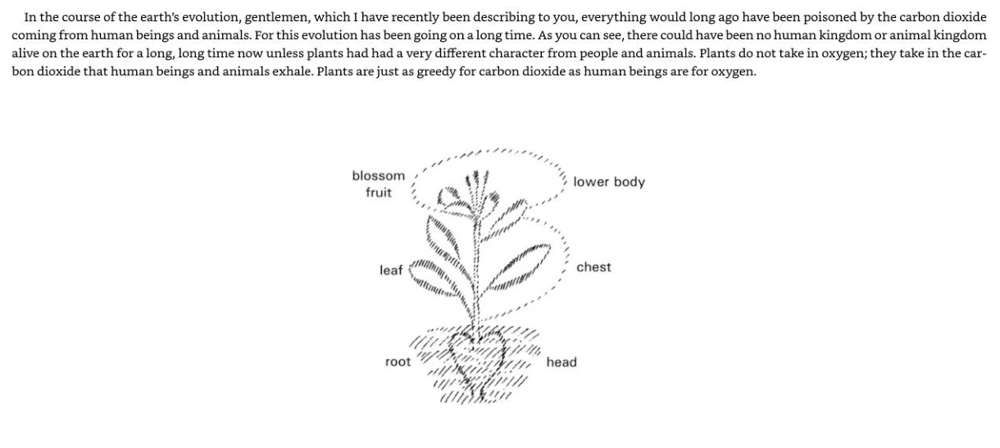

Imagine someone saying that the body is like a musical instrument. First ask what the comparison means: bodily conditions can support or hinder activity. Then ask what it establishes. An image can clarify a relationship without proving that a separate spiritual agent exists. This distinction lets us understand Steiner’s account seriously while examining its grounds.
Nutrition: Food, Health and Spiritual Development brings together Rudolf Steiner’s lecture extracts selected by Christian von Arnim. Its twelve thematic chapters draw on talks from 1906–1924, addressed to different audiences. Editorial introductions and the lecturer’s words are distinct voices; a later editor’s comparison is not automatically a claim made in the original lecture.
The recurring question is how nourishment conditions human activity without replacing individuality. The lessons connect bodily support, inward transformation, cultivation, access to food and spiritual development. They explain the anthroposophical framework directly and identify where historical assertions go beyond, or conflict with, established physiology.
Begin with the short explanation and use the optional questions if useful. The complete earlier lesson, excerpts and further practice remain available below. Capture numbers locate images in the previously supplied 118-image file, not printed pages. Original-witness comparison has not been repeated for this revision; historical source notes are retained as records of earlier work.
Learn the book in detail
Read the anthology as a sequence of explanations with identifiable speakers.
Current attachment: 122-page PDF, positions 9–11. The explanations and worked cases here are original teaching, not quotations. Earlier capture references in the optional reading use the older 118-capture file; the source guide maps both.
Begin with the editor’s question
Christian von Arnim introduces changing nutritional advice, environmental damage and the difficulty of reducing a person to chemistry. The introduction belongs to the editor; it frames extracts delivered by Steiner to different audiences between 1906 and 1924. The order moves from a broad spiritual account to particular substances and health. It is a thematic arrangement, so later chapters sometimes revisit an earlier issue from another direction.
Learn three kinds of statement
A description tells you what occurs, such as the addition of digestive secretions. An analogy makes a relationship imaginable, such as a watch taken apart before reassembly. A spiritual explanation attributes a process to the etheric body or cosmic forces. First identify which kind you are reading. An analogy can clarify the proposed explanation without establishing that it is true.
Read the headnotes and lecture note
Each chapter opens with editorial framing. The claim that the cattle discussion anticipated BSE belongs to that framing; the lecture itself offers a different mechanism. PDF 120 also warns that unrevised lecture records can contain faulty passages. This calls for checking wording and audience rather than treating every sentence as a settled rule.
How to study a chapter
Name its central question, define two terms and trace one example from observation to conclusion. Then ask how it connects to the whole book. Keep source interpretation and present-day evaluation in separate sentences. This makes it possible to learn the teaching fully while identifying where its assumptions or evidence need examination.
Use what you have learned
Why does the course not treat all twelve chapters as steps in one prescribed diet?
Read a worked explanation
They collect different lectures and questions. The recurring principles are transformation, individual circumstances and freedom, while specific claims and emphases vary. Reconstructing these relationships teaches more than combining every recommendation into one menu.
Why can an analogy be useful without proving a cause?
It makes a relationship intelligible. Establishing a cause requires evidence beyond the resemblance used in the analogy.
Why distinguish an editor from a lecturer?
An anthology may place later interpretation beside an earlier lecture. Keeping the voices separate prevents attributing the editor’s retrospective claims to the lecturer.
A musician may need a well-tuned instrument, yet tuning alone does not compose a piece of music. Steiner uses this distinction to ask how nourishment supports human activity without completely explaining individuality. The analogy gives a relationship to consider; it does not demonstrate the existence of a separate spiritual musician.
Steiner begins with the saying attributed to Feuerbach, “A man is what he eats.” The issue is not simply whether food affects health. It is whether a person’s thinking and action can be explained entirely as the material result of digestion. Steiner accepts that bodily conditions matter but rejects their use as a complete explanation of the person. This distinction is the foundation of the anthology: nourishment belongs to a larger account of human life.
In captures 9–10, the body is compared with an instrument. A poorly adjusted instrument cannot perform its task well; similarly, bodily conditions can obstruct the activity Steiner calls spiritual. Yet an instrument is not identical with the musician or the purpose of the music. The image allows him to acknowledge food’s importance without reducing individuality to food. It also changes the dietary question from “What material enters me?” to “What kind of bodily support makes activity possible?”
The instrument metaphor is an explanation of Steiner’s position, not evidence that a separate spiritual agent has been demonstrated. Nutrition does affect bodily functioning; this course studies the additional interpretation he gives it.
Learn the book in detail
Explain why bodily support matters to spiritual freedom.
Current attachment: 122-page PDF, positions 12–13. The explanations and worked cases here are original teaching, not quotations. Earlier capture references in the optional reading use the older 118-capture file; the source guide maps both.
The question behind “we are what we eat”
Steiner begins with the saying attributed to Feuerbach. He accepts that food affects the conditions in which a person acts. His objection concerns reducing thought, intention and individuality entirely to the substances consumed. The chapter therefore asks how nourishment can support a person’s purposes without becoming their complete explanation.
The instrument changes the question
The body is compared with an instrument. An instrument that works poorly can obstruct an intention even if the intention is clear. Applied to food, the question becomes: what enables this person to carry out life’s tasks? The metaphor connects nutrition with freedom because bodily dependence can constrain action. It does not imply that an ideal meal automatically creates spiritual insight.
Substances and processes
Listing protein, fat, carbohydrates and minerals tells us what is supplied. Steiner wants an account of what the living organism does with them. His spiritual account adds formative, sentient and individual activity to the material inventory. The distinction between inventory and activity prepares the fourfold model in the next lesson.
Why he rejects dietary campaigning
The opening refuses to agitate for one dietary tendency. Understanding should enable a person to judge. That commitment becomes a recurring qualification when the book praises vegetarian activity, discusses stimulants or addresses social reform. Read strong claims alongside this qualification, rather than silently turning them into universal commands.
Use what you have learned
How would you change “Which food makes someone spiritual?” into this chapter’s question?
Read a worked explanation
Ask how nourishment supports a person’s capacity to act freely and fulfil understood purposes. The book’s argument gives food a supporting role; spiritual development also requires the person’s own activity.
How does this chapter explain bodily support without reducing individuality to food?
Steiner begins with the saying attributed to Feuerbach, “A man is what he eats.” The issue is not simply whether food affects health. It is whether a person’s thinking and action can be explained entirely as the material result of digestion. Steiner accepts that bodily conditions matter but rejects their use as a complete explanation of the person. This distinction is the foundation of the anthology: nourishment belongs to a larger account of human life.
Does tuning an instrument compose its music? What does that clarify about nourishment?
A musician may need a well-tuned instrument, yet tuning alone does not compose a piece of music. Steiner uses this distinction to ask how nourishment supports human activity without completely explaining individuality. The analogy gives a relationship to consider; it does not demonstrate the existence of a separate spiritual musician.
Consider preparing bread, smelling it and deciding to share it. Materials and bodily movement, living processes, sensory pleasure and deliberate choice are different aspects of the same event. The fourfold account gives these aspects a spiritual interpretation. It should not turn one person into four separate people or make pleasure a measurement of an astral body.
Capture 11 identifies physical body, etheric body, astral body and I. The etheric is described as the life organization resisting decay; the astral bears pleasure, pain and desire; the I bears self-awareness. These are not four separate anatomical compartments. The excerpt insists on reciprocal influence. Glands, nerves and blood are presented as outward expressions of etheric, astral and I activity, so a physical organ is read as expressing an invisible organization.
Captures 14–16 contrast performing formative work oneself with receiving something already prepared by an animal. Steiner regards plant nourishment as requiring more of the human being’s own activity, while animal food can provide a shortcut. His claims about character and organs go beyond what the comparison itself establishes. He also qualifies the contrast through individual constitution: explaining a general tendency does not yield one rule for every eater.
The fourfold account is anthroposophical interpretation. Plants also respire; the book’s contrast between plant and human gas processes should not be taken as a complete account of photosynthesis or respiration.
Learn the book in detail
Use the fourfold model to understand transformation, inner activity and dietary qualification.
Current attachment: 122-page PDF, positions 14–21. The explanations and worked cases here are original teaching, not quotations. Earlier capture references in the optional reading use the older 118-capture file; the source guide maps both.
Four members working together
The physical body is the material organization; the etheric body is the proposed bearer of life and formative activity; the astral body bears sensation, desire, pleasure and pain; the I bears self-awareness. Steiner associates glands with etheric activity, nerves with astral activity and blood with the I. These are interdependent aspects in his model, not four separate anatomical organs.
Building and dismantling
Outer light helps plants build living substances. Steiner contrasts this with an inner light through which animals and humans dismantle what has been formed. Etheric preservation and astral dissolution must work together. He locates the possibility of conscious inner life in this interplay, so digestion becomes more than replacing lost material. This is the reasoning behind his emphasis on activity.
Plants, animals and work already performed
He says plant food calls forth more of the human organism’s own transforming activity, whereas animal food arrives after some activity has been performed by the animal. He connects the first with inward independence and the second with support for outward force. The text also makes unsupported claims about character and eyesight. Those extensions should not be used to judge a person from their diet or appearance.
Milk and stimulants complete the argument
Milk is described as a gentler form of animal nourishment. Coffee supposedly supports connected thought, tea more mobile association, and alcohol substitutes for activity belonging to the I. These examples develop one question: when does external support assist us, and when does reliance on it reduce independence? The chapter closes by returning to individual suitability rather than prescribing an exclusive milk or plant diet.
Use what you have learned
Why would “more inner work is always better” misread the chapter?
Read a worked explanation
Steiner also recognizes limits of constitution and the need for support in practical life. The purpose is coordinated activity, not maximum strain. His specific physiological claims remain separate questions from this internal logic.
How does this chapter explain the fourfold human being?
Capture 11 identifies physical body, etheric body, astral body and I. The etheric is described as the life organization resisting decay; the astral bears pleasure, pain and desire; the I bears self-awareness. These are not four separate anatomical compartments. The excerpt insists on reciprocal influence. Glands, nerves and blood are presented as outward expressions of etheric, astral and I activity, so a physical organ is read as expressing an invisible organization.
Does enjoying the aroma of bread measure an astral body?
Consider preparing bread, smelling it and deciding to share it. Materials and bodily movement, living processes, sensory pleasure and deliberate choice are different aspects of the same event. The fourfold account gives these aspects a spiritual interpretation. It should not turn one person into four separate people or make pleasure a measurement of an astral body.
Clay can be softened, shaped and hardened again. That familiar sequence helps us imagine a change of form, but it does not explain Steiner’s warmth ether. His account adds a spiritual stage and cosmic formative activity. Understanding the sequence means identifying that additional claim, rather than treating a familiar transformation as proof of it.
Capture 21 describes mineral substance passing through fluid and other conditions into warmth ether. At that stage it is said to receive forces from cosmic spaces and the higher hierarchies. It then resolidifies and contributes to the form of organs. The important order is transformation, reception of formative forces, and renewed embodiment. Calcium phosphate in bone is his example: its organization is attributed to this intervening spiritual process.
A child, Steiner says, has not yet developed sufficient strength to perform the full transformation of lifeless matter. Milk is closer to the living organism and therefore eases the work of shaping the growing body. The example connects nourishment with developmental capacity, rather than presenting one food as equally suitable for every age. It also anticipates the later pairing of milk and honey.
Warmth ether and spiritual hierarchies are not measured stages of modern digestion. Diabetes is explained medically through problems with insulin production or action, not failure to transform minerals into warmth ether. The child/milk passage is historical interpretation, not an infant-feeding plan.
Learn the book in detail
Follow the mineral-to-form sequence and understand what warmth ether means in this argument.
Current attachment: 122-page PDF, positions 22–25. The explanations and worked cases here are original teaching, not quotations. Earlier capture references in the optional reading use the older 118-capture file; the source guide maps both.
Why the laboratory comparison matters
The chapter opposes the idea that processes observed outside a person simply continue unchanged inside. Steiner’s example is a mineral used in bone. He says its place in living form cannot be understood by identifying its chemical composition alone. The question is how something from the environment becomes part of an individualized living organism.
The proposed sequence
His sequence runs from mineral substance through fluid transformation to warmth ether, reception of cosmic spiritual forces, and renewed solidification into bodily form. Warmth ether is an anthroposophical condition of substance, not simply hot food or ordinary body temperature. The upward movement loosens the earthly state; the return brings organization into matter. Both movements matter to his explanation.
Milk and the question of capacity
A young child, in this account, cannot perform every transformation required of an older organism. Milk offers nourishment with preliminary work already accomplished. This gives the spiritual picture a developmental dimension: the same substance is considered in relation to the organism’s capacity at a particular age. It is not an infant-feeding protocol.
Where the theory becomes a medical claim
Steiner interprets deposits, diabetes and catching cold as failures to appropriate external substance or warmth. Those are stronger causal claims than the general observation that organisms transform food. Modern accounts of diabetes involve insulin and blood-glucose regulation; common colds are viral infections. Understanding the proposed sequence does not authorize treating illness through warmth-ether exercises.
The chapter’s proposed transformation: a spiritual model
Stage
Role in the argument
Mineral substance
An external substance enters the organism.
Fluid and warmth-ether transformation
It loses its external condition and becomes open to cosmic forces.
Reception and return to form
Spiritually organized substance resolidifies as living bodily form.
Use what you have learned
Is “warmth ether” another name for warming a meal?
Read a worked explanation
No. It is a proposed spiritual condition in the chapter’s account of incorporation. Cooking is discussed elsewhere as external preparation; confusing the two would merge different arguments.
How does this chapter explain the proposed mineral transformation?
Capture 21 describes mineral substance passing through fluid and other conditions into warmth ether. At that stage it is said to receive forces from cosmic spaces and the higher hierarchies. It then resolidifies and contributes to the form of organs. The important order is transformation, reception of formative forces, and renewed embodiment. Calcium phosphate in bone is his example: its organization is attributed to this intervening spiritual process.
Does shaping clay establish the existence of warmth ether?
Clay can be softened, shaped and hardened again. That familiar sequence helps us imagine a change of form, but it does not explain Steiner’s warmth ether. His account adds a spiritual stage and cosmic formative activity. Understanding the sequence means identifying that additional claim, rather than treating a familiar transformation as proof of it.
Plant reversal, animal organization, milk and honey
Turning a diagram upside down changes the relationship of its parts on the page. Steiner’s plant reversal similarly asks us to follow directions and relationships: root forces toward the head, flower forces toward the lower organization. Neither image says that a swallowed carrot travels intact to the head. The diagram makes his correspondence intelligible without establishing it as physiology.
In the external plant, roots are below and blossoms above. In human digestion, Steiner says the direction of the root’s forces becomes upward toward the head, while the flower’s forces are directed downward. His handkerchief demonstration illustrates an inversion of relationships. It does not say that a swallowed root physically travels intact into the skull. The human organism is presented as completing a movement toward spirit that the plant begins in nature.
Captures 28–30 return to formative forces: milk is associated with shaping the child, while honey is associated with supporting corresponding forces later in life. The bee colony is interpreted through a head-like organization, and the biblical pairing of milk and honey is given a spiritual meaning. The chapter therefore runs from substances through plant and animal relationships to age-specific nourishment; these examples belong to one argument about form, not an unrelated menu.
The reversal and cosmic history are Steiner’s spiritual interpretations. The milk–honey symbolism is not a feeding recommendation; honey must not be given to children under 12 months because of infant botulism risk.
Learn the book in detail
Explain plant reversal, the animal contrast, and the milk-and-honey analogy.
Current attachment: 122-page PDF, positions 25–32. The explanations and worked cases here are original teaching, not quotations. Earlier capture references in the optional reading use the older 118-capture file; the source guide maps both.
Root and blossom as opposing directions
The root binds the plant to earthly minerals; the blossom opens toward light. Steiner gives these directions a soul-like character, describing satisfaction below and longing above. Seasonal flowers become a mirror of conscience in his imaginative account. This is a spiritual interpretation of plant form, not a way to establish that a flower is edible or medicinal.
What “the plant reverses itself” means
Within the human being, he says, root activity rises toward the head, while flower activity remains in the lower metabolic region. The external direction becomes an internal opposite. His handkerchief demonstration makes this inversion imaginable: push the lower part through the centre so it becomes uppermost. No anatomical plant literally grows inside a digestive tract.
Why animals enter the argument
Steiner contrasts upright human organization with the horizontal animal body. He says the latter cannot complete the same reversal, and adds an account of elemental fear and animal afterlife. His warning against projecting human consciousness onto animals qualifies that story. These are claims within his cosmology, not established explanations of animal digestion or evidence that animal suffering can be disregarded.
Milk and honey as formative counterparts
Milk supports shaping from the child’s head in this account. Later life calls for another source of form-giving activity: the bee colony is compared with a head open to its surroundings, and honey supplies its counterpart. The phrase “milk and honey” thus summarizes a developmental polarity. This teaching is an analogy about forces; it is not a dose recommendation, and honey must not be given to infants under one year.
Use what you have learned
Why is a list saying “root cures the head” an inadequate summary?
Read a worked explanation
It removes the transformation, reversal and developmental context. It also changes an attributed spiritual relationship into an unsupported medical promise. The teaching concerns how external nature is reinterpreted inside human organization.
How does this chapter explain the root–flower reversal?
In the external plant, roots are below and blossoms above. In human digestion, Steiner says the direction of the root’s forces becomes upward toward the head, while the flower’s forces are directed downward. His handkerchief demonstration illustrates an inversion of relationships. It does not say that a swallowed root physically travels intact into the skull. The human organism is presented as completing a movement toward spirit that the plant begins in nature.
Does the root–head correspondence describe an intact carrot moving to the head?
Turning a diagram upside down changes the relationship of its parts on the page. Steiner’s plant reversal similarly asks us to follow directions and relationships: root forces toward the head, flower forces toward the lower organization. Neither image says that a swallowed carrot travels intact to the head. The diagram makes his correspondence intelligible without establishing it as physiology.
Cosmic nourishment and the problem of spiritual independence
Someone can give generously and still need to keep an appointment or make a decision. Moral selflessness does not mean losing the practical capacity to act as an individual. This distinction helps explain why Steiner pairs spiritual openness with earthly stability. His further assignment of that stabilizing role to sugar remains a separate claim, not a conclusion drawn from the everyday example.
Captures 31–33 describe milk as supporting earthly citizenship without confining a person entirely to earth. Plant food is related to a wider solar or cosmic sphere, while meat is described as binding more strongly to earthly conditions. Milk can serve as ballast for someone whose spiritual practice might otherwise weaken engagement with earthly tasks. The organizing question is balance between spiritual openness and the responsibilities of embodied life.
Capture 35 distinguishes moral selflessness from a bodily sense of individual stability. Steiner proposes sugar as a physical counterweight: the person can strive for moral selflessness while retaining the capacity to judge and act on earth. “Innocent” matters because bodily ego-character is not being equated with moral selfishness. The passage is not simply praising indulgence; it assigns a role in his account of spiritual development.
Cosmic food relationships and sugar-produced ego-character are spiritual claims. The text does not establish that eating sugar improves personality or that national character follows sugar consumption. Coffee/tea descriptions are not reliable personality tests.
Learn the book in detail
Understand the cosmic food comparisons without mistaking dietary change for spiritual attainment.
Current attachment: 122-page PDF, positions 33–39. The explanations and worked cases here are original teaching, not quotations. Earlier capture references in the optional reading use the older 118-capture file; the source guide maps both.
The audience changes the meaning
This chapter addresses esoteric development and the sensitivity Steiner says accompanies it. Milk, plant food and meat are compared through their proposed earthly or solar relationships. Milk connects a person with earthly human tasks, plants with solar-system forces, and meat more strongly with earthly organization. These are relationships in his cosmology, not measured properties of food.
Ballast and selflessness
He recommends earthly grounding rather than spiritual enthusiasm detached from human duties. Milk is called ballast in this sense. Sugar is described as bodily support for individuality while moral activity becomes more selfless. “Innocent ego-character” means a counterweight to losing earthly orientation; it does not make eating sweets a moral achievement or a treatment.
Protein and fat in the cosmic account
Protein is associated with spirits of form and fat with spirits of movement. The developing soul is said to experience these activities more distinctly. The chapter moves between food, spiritual hierarchies and reported inner experience. That background explains why its vocabulary is richer than a modern nutrient table and why its claims cannot be confirmed by chemical analysis alone.
Coffee, tea and chocolate
Coffee supposedly gives thinking a scaffold; tea loosens it into mobile association; chocolate is linked polemically with ordinary comfort. Steiner also warns against relying on stimulants to prepare oneself spiritually. These characterizations should be understood as historical descriptions, not personality tests. His national comparisons concerning sugar do not establish differences in human worth or individuality.
Use what you have learned
Why is the “ballast” image important to the spiritual teaching?
Read a worked explanation
It shows that the aim is not detachment from human responsibilities. Spiritual aspiration and practical earthly life are meant to remain connected. A dietary category alone cannot demonstrate that this balance has been achieved.
How does this chapter explain sugar and two meanings of selfhood?
Steiner distinguishes moral selflessness from the bodily stability needed to judge and act as an individual. He assigns sugar a bodily stabilizing role during spiritual development, calling this bodily ego-character “innocent” because it is not the same as moral selfishness. This explains his proposed spiritual relationship; it does not establish that eating sugar improves selfhood or provide dietary advice.
Does the distinction between generosity and practical individuality demonstrate a stabilizing effect of sugar?
Someone can give generously and still need to keep an appointment or make a decision. Moral selflessness does not mean losing the practical capacity to act as an individual. This distinction helps explain why Steiner pairs spiritual openness with earthly stability. His further assignment of that stabilizing role to sugar remains a separate claim, not a conclusion drawn from the everyday example.
A pantry stores food; a living organism continually changes what it receives. This difference clarifies why Steiner asks about activity rather than quantity alone. His next step assigns opposition to decay, rancidity and fermentation to different spiritual members. The contrast with storage helps explain the question, while those particular assignments require their own justification.
Captures 40–44 assign protein decay to the etheric body’s opposition, fat rancidity to the astral body’s opposition and sugar/starch fermentation to the I’s opposition. The quoted solid/fluid/gas pattern is completed by warmth in relation to the I. This explains why warmth, breathing and life forces recur: substances are interpreted through ongoing activities that prevent them from behaving as they would outside a living body.
Captures 44–46 say that excessive potato consumption burdens head activity, which Steiner associates with controlling fermentation. He then links this burden to impaired thinking and materialism. Separate the chain into steps: dietary choice, digestive demand, head activity, character of thinking. The last steps are additional causal assertions. Knowing that potatoes contain starch does not establish that they cause a materialistic worldview.
The spiritual opponents of decay are not established digestive mechanisms. The text’s protein figures, potato/materialism linkage and historical metal remedies must not be treated as current nutritional or treatment advice. Modern nutrient digestion is explained through enzymes, absorption and metabolism.
Learn the book in detail
Explain the chapter’s three counterprocesses and why its protein discussion concerns transformation.
Current attachment: 122-page PDF, positions 40–51. The explanations and worked cases here are original teaching, not quotations. Earlier capture references in the optional reading use the older 118-capture file; the source guide maps both.
From quantity to the living process
Steiner opens by contrasting changing protein recommendations. His point is that a numerical intake rule cannot explain what happens when an organism processes food. He connects excess protein with putrefaction and disease, then asks which living activities oppose decay. The historical gram figures are part of that polemic; they are not current intake targets, and protein deficiency is harmful.
Three proposed counterprocesses
The etheric body opposes protein putrefaction, the astral body opposes fats becoming rancid, and the I opposes fermentation of starch and sugar. Solid, fluid, gaseous and warmth conditions provide another parallel: physical, etheric, astral and I. The source table brings these relationships together. It describes a living organization maintaining conditions different from those in unattended food or a dead body.
Why potatoes and alcohol appear here
Steiner says starch increases a task of controlling fermentation and alcohol interferes with that task. He extends this to claims about potatoes, brain activity, eyesight and materialism. The examples are meant to show consequences of an imbalance in the proposed system. They do not establish that eating potatoes causes a worldview, visual impairment or intellectual limitation.
Living processes and historical remedies
The spa discussion contrasts an outer sulphurous smell with an inner counterprocess; the chapter also mentions copper, arsenic and egg white. These examples belong to an historical therapeutic explanation. They are not home experiments. Do not inhale hydrogen sulphide or use metals or egg white to treat poisoning; suspected poisoning requires appropriate urgent medical advice. The conceptual lesson is to distinguish a substance from the process and context in which it acts.
Chapter 4: the three proposed counterprocesses (PDF 50)
Compare the original source figure or table · PDF 50

Original page from the supplied anthology. The lesson above explains its relationships and limitations; this is historical teaching, not a current clinical diagram. Open at full size.
Use what you have learned
Does the observation that a living body differs from a corpse by itself prove the three spiritual counterprocesses?
Read a worked explanation
No. It motivates the problem Steiner is explaining. The particular explanation requires further support. A complete answer both describes his etheric/astral/I relationships and distinguishes the observation from the proposed cause.
How does this chapter explain three processes and their spiritual opponents?
Captures 40–44 assign protein decay to the etheric body’s opposition, fat rancidity to the astral body’s opposition and sugar/starch fermentation to the I’s opposition. The quoted solid/fluid/gas pattern is completed by warmth in relation to the I. This explains why warmth, breathing and life forces recur: substances are interpreted through ongoing activities that prevent them from behaving as they would outside a living body.
Why is a pantry an incomplete model of nourishment?
A pantry stores food; a living organism continually changes what it receives. This difference clarifies why Steiner asks about activity rather than quantity alone. His next step assigns opposition to decay, rancidity and fermentation to different spiritual members. The contrast with storage helps explain the question, while those particular assignments require their own justification.
Two loaves may have similar ingredient lists while involving different soils, growers and preparation. Asking about that history broadens attention beyond the finished product. It does not settle which cultivation method produces a better outcome: that comparison needs a defined outcome and observations. Steiner’s cultivation argument combines this useful historical question with stronger claims about plant quality.
Capture 50 compares processing protein with taking a watch apart: the parts must be released from their existing arrangement before a new organization can be made. This illustrates Steiner’s emphasis on transformation rather than direct transfer of ready-made structures. It does not prove his stronger claim that protein must be reduced to its chemical elements. Modern digestion describes protein breakdown into smaller peptides and amino acids.
Captures 51–52 say that the quality of plant protein depends on how the plant grows. Soil is treated as living, and manure is contrasted with mineral fertilizer. Steiner calls the cow a more adequate “laboratory” than the chemist’s mixture because its product has passed through life processes. Within his argument, the quality of nourishment cannot be understood by listing ingredients at the meal: the history of the food also matters.
The claim that breathed nitrogen directly supplies human protein is inconsistent with ordinary human nutrition: people obtain usable nitrogen through dietary compounds. The watch is an analogy, not a digestive pathway. The chapter’s carrot/worm and fertilizer claims need independent evidence.
Learn the book in detail
Trace food quality from cultivation to bodily transformation and the observation of appetite.
Current attachment: 122-page PDF, positions 52–58. The explanations and worked cases here are original teaching, not quotations. Earlier capture references in the optional reading use the older 118-capture file; the source guide maps both.
The watch and the organism
Taking a watch apart teaches how its parts fit together. Steiner compares this with dismantling ingested protein before producing one’s own. The analogy emphasizes active reconstruction rather than simply depositing food in the body. He then claims that much of the required material comes from air and sensory uptake. Modern physiology instead recognizes absorbed amino acids, including essential amino acids, as necessary sources for human protein synthesis.
Why the farm belongs in a nutrition lesson
Food quality begins before eating. Steiner argues that a living plant needs living soil and that farm manure sustains a quality which a mineral inventory cannot reproduce. The argument connects cultivation, plant protein and human vitality. It gives a reason to study agricultural conditions; it does not demonstrate that all mineral fertilizer produces nutritionally inadequate food. Specific comparisons need measurements and growing context.
Appetite as information
The deprived prisoner’s craving illustrates the proposed connection between need and appetite. A friend weighing every portion illustrates losing contact with bodily judgement. Steiner then argues that adults should observe children’s likes and aversions rather than force food mechanically. The useful question is what the response tells us; appetite is not an infallible nutrient test.
Observation does not establish diagnosis
The chapter links carrot craving to worms, sugar-seeking to the liver and meat refusal to intestinal toxins. Those are causal and diagnostic assertions, not merely the general principle of listening to children. Preferences alone cannot establish these conditions. A respectful meal can allow choice among suitable foods while ensuring adequate nourishment and seeking help for persistent feeding difficulties.
Use what you have learned
How does “food quality begins on the farm” enlarge the book’s original question?
Read a worked explanation
It connects the organism’s activity with the conditions under which food is produced. The meal is part of a chain involving soil, cultivation, food, digestion and individual response, rather than a chemical quantity considered in isolation.
How does this chapter explain food quality before the meal?
For Steiner, nourishment begins with how the plant grows: he contrasts living soil and manure with mineral fertilizer and treats the cow’s life processes as relevant to the manure’s quality. Thus an ingredient list at the meal omits the food’s history. This reconstructs his cultivation argument; comparing actual nutritional or agricultural outcomes still requires independent evidence.
Do similar ingredient lists settle every question about how two loaves were produced?
Two loaves may have similar ingredient lists while involving different soils, growers and preparation. Asking about that history broadens attention beyond the finished product. It does not settle which cultivation method produces a better outcome: that comparison needs a defined outcome and observations. Steiner’s cultivation argument combines this useful historical question with stronger claims about plant quality.
A sequence of kitchen stations might wash, cut and cook an ingredient; each station does a different job. This is a limited analogy for following a process rather than imagining unchanged food moving through a tube. In the digestive account, identifying the secretions and their roles comes before considering Steiner’s additional language of organ perception and thinking.
Captures 57–58 follow food from tasting and saliva to stomach processing. Steiner emphasizes that perception and bodily conditions affect how the meal is experienced. Chyme names the partly digested mixture; ptyalin is the historical term for salivary amylase. Pepsin is introduced in the stomach. The chapter is interested in successive changes, not in an unchanged substance passing through a tube.
Capture 59 adds pancreatic trypsin and then bile from the liver. These form the chapter’s sequence of four liquids. The process is used to support the claim that the organism performs an intelligence not available to ordinary head-centred awareness. The distinctions matter: bile is a secretion that assists digestion, but it is not itself a digestive enzyme; the four items are not four identical substances.
Present physiology explains digestive secretions through enzymes, organs, nerves and hormones. Bile assists fat digestion. Liver “perception,” kidney “thinking,” and specific dream imagery are additional spiritual interpretations, not established organ functions.
Learn the book in detail
Follow the digestive sequence and distinguish its physiological vocabulary from its soul interpretation.
Current attachment: 122-page PDF, positions 59–62. The explanations and worked cases here are original teaching, not quotations. Earlier capture references in the optional reading use the older 118-capture file; the source guide maps both.
Mouth and stomach
The chapter begins with saliva, taste and ptyalin, the historical name for salivary amylase. Food passes through the oesophagus to the stomach, where pepsin enters the account. Steiner calls the secretions kinds of saliva to make their successive roles familiar. Modern explanations distinguish their composition and action rather than treating all digestive liquids as the same substance.
Pancreas, liver and the four-liquid sequence
The pancreas contributes secretions to the small intestine. Steiner names trypsin, then adds bile from the liver as a fourth liquid after saliva, gastric secretion and pancreatic secretion. The sequence is not four separate chambers through which food passes: pancreatic juice and bile enter the intestine. Bile helps fat digestion but is not itself a digestive enzyme.
Perception outside head consciousness
The discussion then assigns perception to the liver and thinking to the kidneys. Dreams are offered as indirect expressions of these activities. The onion-and-tears example supplies an analogy: just as perceived irritation brings tears, the liver supposedly perceives chyme and responds with bile. The analogy explains his intention; it does not demonstrate organ consciousness.
Why this prepares the next lesson
Steiner sees a wisdom in digestion exceeding ordinary deliberate intelligence. The organized sequence becomes an example of unconscious soul-spiritual work. Modern physiology also recognizes complex automatic regulation, but that does not by itself establish the additional interpretation. Learn the actual order first, then state exactly where the interpretation enters.
Digestive sequence: names in the source and present distinctions
Site/contribution
Source vocabulary
Present distinction
Mouth
Ptyalin in saliva
Salivary amylase begins starch digestion.
Stomach
Pepsin
An enzyme involved in protein digestion.
Pancreas → small intestine
Trypsin
One of several pancreatic digestive enzymes; activated in the intestine.
Liver → digestive tract
Bile
Supports fat digestion; it is not an enzyme.
Compare the original source figure or table · PDF 61

Original page from the supplied anthology. The lesson above explains its relationships and limitations; this is historical teaching, not a current clinical diagram. Open at full size.
Use what you have learned
Does food travel through the liver and pancreas as it travels through the stomach?
Read a worked explanation
No. Their secretions enter the digestive tract. The lesson’s four-liquid account describes contributions to digestion, and the claims about organ perception belong to a separate explanatory layer.
How does this chapter explain the digestive sequence?
Captures 57–58 follow food from tasting and saliva to stomach processing. Steiner emphasizes that perception and bodily conditions affect how the meal is experienced. Chyme names the partly digested mixture; ptyalin is the historical term for salivary amylase. Pepsin is introduced in the stomach. The chapter is interested in successive changes, not in an unchanged substance passing through a tube.
What does following a sequence reveal that imagining an unchanged substance misses?
A sequence of kitchen stations might wash, cut and cook an ingredient; each station does a different job. This is a limited analogy for following a process rather than imagining unchanged food moving through a tube. In the digestive account, identifying the secretions and their roles comes before considering Steiner’s additional language of organ perception and thinking.
A pile of bicycle parts cannot carry a rider, while an assembled bicycle can. The difference shows why an isolated material is not always an adequate model of an organized whole. Likewise, showing that isolated salt cannot think does not by itself decide between a spiritual explanation of thinking and an explanation involving organized biological systems.
Capture 65 associates salts with thinking and dispersed phosphorus with willing. Steiner asks why isolated salt does not think and burning phosphorus does not develop will, while a human being can think and will. His answer is the quoted soul-spirit: a living agent that uses materials rather than being reducible to them. The contrast makes his proposed explanation clear, but does not rule out explanations involving organized biological systems.
A common reading mistake is to memorize “salt equals thought” and miss the chapter’s purpose. The conclusion is that something acts through matter. Capture 66 then criticizes an approach that sees only dead structures. Evaluate the inferential step explicitly: does the failure of an isolated substance to think demonstrate a separate soul-spirit, or does it show that isolated substances are not sufficient models of an organized brain? The text offers one answer; the question remains open to scrutiny.
The salt/thinking and phosphorus/willing mapping is not an established mechanism or a supplementation guide. Do not reproduce the match-tip or phosphorus example as an experiment. Organized nervous systems, unlike isolated substances, are relevant to modern explanations of thought.
Learn the book in detail
Explain the move from transformed food to the chapter’s account of thinking and willing.
Current attachment: 122-page PDF, positions 63–68. The explanations and worked cases here are original teaching, not quotations. Earlier capture references in the optional reading use the older 118-capture file; the source guide maps both.
Four transformations to keep distinct
The chapter’s list gives starch → sugar, protein → liquid protein, fats → glycerine and fatty acids, minerals → minerals. It then describes alcohol as a preservative produced during protein processing. Modern protein digestion is explained through enzymes, peptides and amino acids, not preservation by intestinal alcohol. Starch digestion also does not imply that everyone needs added sugar.
The glass of water and its limits
Steiner uses sugar dissolving in water to argue that the body’s fluids can distribute substances without the vascular route usually described. He adds a claimed ninety-percent fluid content and an explanation of migraine through deposits. A stirred glass clarifies diffusion but lacks intestinal barriers, circulation, organs and regulation. It cannot demonstrate that ingested water bypasses the bloodstream to reach urine or establish a migraine diagnosis.
Salt, phosphorus and uprightness
Buoyancy and the upright body prepare the claim that salts support thinking and finely dispersed phosphorus supports willing. The relationship concerns the use of material conditions by soul-spirit. It is not a recommendation to increase salt or phosphorus. The source’s match illustration must be read as historical exposition, never performed as an ingestion or fire exercise.
The decisive philosophical step
Salt left on a table does not think; phosphorus burning does not will. Steiner infers an organizing soul-spirit from their different roles in a living person. His conclusion is that studying substances is incomplete without studying the whole active organism. Understanding that inference also means asking whether it follows uniquely from the examples or whether other accounts can explain the same observations.
Compare the original source figure or table · PDF 67Original page from the supplied anthology. The lesson above explains its relationships and limitations; this is historical teaching, not a current clinical diagram. Open at full size.
Use what you have learned
What is lost if the salt/phosphorus diagram is treated as a shopping list?
Read a worked explanation
Its purpose is to argue for soul-spiritual organization using matter. Turning it into intake instructions removes the philosophical question and invents a dosage claim the diagram does not establish.
How does this chapter explain the salt-and-thinking argument?
Capture 65 associates salts with thinking and dispersed phosphorus with willing. Steiner asks why isolated salt does not think and burning phosphorus does not develop will, while a human being can think and will. His answer is the quoted soul-spirit: a living agent that uses materials rather than being reducible to them. The contrast makes his proposed explanation clear, but does not rule out explanations involving organized biological systems.
Why does the fact that isolated salt cannot think fail to settle the explanation of thought?
A pile of bicycle parts cannot carry a rider, while an assembled bicycle can. The difference shows why an isolated material is not always an adequate model of an organized whole. Likewise, showing that isolated salt cannot think does not by itself decide between a spiritual explanation of thinking and an explanation involving organized biological systems.
Grinding grain and cooking a meal are work performed before eating. Steiner uses preparation outside the body to explain his question about work remaining inside it. The relationship is easier to understand when the actual operation is named. It does not follow that one observation about a cooked food establishes a rule for every food or every person.
Captures 70–72 relate mineral-rich roots to the head, leaves to the chest and fruit to the lower organism. The potato is correctly distinguished as a tuber rather than an ordinary root. Steiner then assigns it different demands on inward work. Separating botanical description from spiritual attribution is essential: identifying the eaten plant organ does not by itself establish which human region its forces chiefly affect.
The excerpt states the governing analogy. Grinding, baking and cooking carry out a preparatory activity outside the body, easing what the organism must do inside. Raw and cooked potatoes are his concrete comparison. This is a useful place to test comprehension by describing the work being transferred, rather than simply repeating “cooking is good.” The chapter’s stronger claim that a raw-food regime must ultimately collapse the body is not established by that one example.
Cooking can change digestibility and food properties, but the chapter’s universal dismissal of raw diets and its spiritual organ mapping exceed the evidence supplied. Carrot-based worm treatment and national-character claims in this section are historical assertions, not established guidance.
Learn the book in detail
Connect plants, food preparation and the distinction between useful transformation and excessive strain.
Current attachment: 122-page PDF, positions 69–76. The explanations and worked cases here are original teaching, not quotations. Earlier capture references in the optional reading use the older 118-capture file; the source guide maps both.
Plants and the wider food relationship
The workers’ question begins with beans, carrots and grains. Steiner first places nourishment in the relation between green plants, air and human blood. His account of reciprocal carbon dioxide and oxygen emphasizes dependence on plant life. Modern biology also recognizes photosynthesis and respiration, including respiration in plants; plants do not require human beings specifically in order to exist.
Why plant organs matter to the teaching
Roots are connected with head/mineral activity; leaves with the chest; blossoms and fruits with the lower organism. A potato is a modified stem tuber, not a root like a carrot. The botanical distinction is real, while the organ-specific nutritional mechanism is an additional claim. Separating those two steps lets the reader understand why Steiner treats similar-looking underground foods differently.
What cooking and milling contribute
Grinding grain and applying heat perform work outside the body. Steiner argues that this reduces the work needed inside. The bread example explains preparation as a continuation of natural processes rather than an abandonment of nature. His criticism of an exclusively raw diet belongs here, but the same chapter allows raw leaves and some fruit. It is not a ban on every uncooked food.
Reconciling two uses of “work”
The book praises inner activity in vegetarian nourishment yet says preparation can save digestive work. These need not be identical measures: developing a capacity is different from overwhelming it. The explanation concerns a relationship between task and ability. It does not follow that the hardest-to-digest food is the most spiritual, or that all bodily sensations measure spiritual effort.
A spiritual nutritional claim, not a treatment for worms or headache.
Leaves
Chest
Not evidence that leafy vegetables supply most dietary fat.
Blossom/fruit
Lower organism
Not a modern protein-content ranking.
Potato tuber
Modified stem; a distinct transformation task
Botanical identity does not prove the asserted effects on thought.
Compare the original source figure or table · PDF 71

Original page from the supplied anthology. The lesson above explains its relationships and limitations; this is historical teaching, not a current clinical diagram. Open at full size.
Use what you have learned
Why is “Steiner praises digestive effort, so cooking must be wrong” an incomplete reading?
Read a worked explanation
He distinguishes transforming activity from unnecessary burden. Cooking and milling can prepare a task for the organism, while the living organism still performs assimilation. Read the particular example and its qualifications, not a slogan about maximum effort.
How does this chapter explain preparation outside the body?
Grinding, baking and cooking perform preparatory work outside the body that, in Steiner’s comparison, reduces the work remaining inside. The organism still has to digest the food. His raw-versus-cooked potato example illustrates the proposed transfer; it does not establish a universal rule that raw-food diets inevitably cause bodily collapse.
Can one example of cooking establish a dietary rule for everyone?
Grinding grain and cooking a meal are work performed before eating. Steiner uses preparation outside the body to explain his question about work remaining inside it. The relationship is easier to understand when the actual operation is named. It does not follow that one observation about a cooked food establishes a rule for every food or every person.
Individual diets, animal feeding and access to food
An attractive menu is not an available meal if a household cannot obtain its ingredients. This everyday distinction connects dietary choice with the chapter’s closing concern about access. It also explains why a general preference cannot settle every individual decision. The lecture’s claims about digestive mechanisms must still be assessed separately from its argument about circumstances and freedom.
Captures 75–77 continue the distinction between receiving animal-prepared nourishment and performing one’s own formative work. Steiner presents his own vegetarian experience as supporting greater stamina. Yet the quoted qualification says that an individual’s capacity must first be considered. Within this argument, a general preference cannot replace judgement about constitution. Personal experience illustrates his position but does not establish identical results for everyone.
Captures 81–82 include unsupported racial generalizations and then discuss food markets serving wealthy spa patients. The chapter thus leaves individual stomachs and asks how social arrangements determine what food people can obtain. This expands freedom: choices depend on circumstances as well as intentions. An account of nourishment that ignores access is incomplete even if it gives detailed instructions to individual eaters.
CDC describes BSE as a prion disease, with strong evidence of spread through contaminated feed. The headnote’s prediction claim does not validate Steiner’s urate theory. Racial/intestine-length generalizations are unsupported and should not be used to infer anyone’s digestive ability.
Learn the book in detail
Explain individual dietary capacity and the chapter’s move from personal habits to social conditions.
Current attachment: 122-page PDF, positions 77–84. The explanations and worked cases here are original teaching, not quotations. Earlier capture references in the optional reading use the older 118-capture file; the source guide maps both.
The mixed plant meal
Steiner combines roots, leaves and fruits through their proposed head, chest and abdominal relationships. Sun-ripening is described as a kind of preparation; weak digestion may call for cooked fruit in his account. The point is a varied relationship of foods and bodily capacities. The list is not an accurate modern ranking of protein or fat content: fruit is generally not a major protein source and leafy salad is not a concentrated fat source.
A personal experience is not a universal rule
He says vegetarian activity helped his own demanding lecture schedule, then insists that suitability is individual. He also discusses people who feel faint and may need a different diet. The qualifying sentences are part of the teaching. They prevent the stronger praise of vegetarianism from becoming a spiritual ranking of people with different health needs.
The ox and the unused-force argument
An ox fed animal flesh supposedly leaves plant-to-flesh forces unused, producing harmful urates that affect the brain. The editor relates this to BSE, but the lecture’s mechanism is not the modern prion explanation of BSE. The comparison should teach how to distinguish a historical warning, an editorial retrospective interpretation and an established disease mechanism.
From the spa to the market
The final pages ask what happens when wealthy people can buy repeated spa treatments while others must buy food shaped by the same market. The social question is access and the organization of production, not simply private self-control. Racial and national-character generalizations in the preceding discussion are unsupported and should not be used to assign a suitable diet by ancestry.
Use what you have learned
Why does the chapter end with a social question instead of another menu?
Read a worked explanation
Individual choice occurs within production, prices and access to food and care. The book extends its attention to the whole organism into attention to the conditions of social life. That argument can be understood separately from its inaccurate disease mechanisms.
How does this chapter explain the limits of a universal dietary rule?
Captures 75–77 continue the distinction between receiving animal-prepared nourishment and performing one’s own formative work. Steiner presents his own vegetarian experience as supporting greater stamina. Yet the quoted qualification says that an individual’s capacity must first be considered. Within this argument, a general preference cannot replace judgement about constitution. Personal experience illustrates his position but does not establish identical results for everyone.
How can an attractive menu still leave someone without a practicable choice?
An attractive menu is not an available meal if a household cannot obtain its ingredients. This everyday distinction connects dietary choice with the chapter’s closing concern about access. It also explains why a general preference cannot settle every individual decision. The lecture’s claims about digestive mechanisms must still be assessed separately from its argument about circumstances and freedom.
Sunlight helps a plant grow, but that observation is not identical to saying that a human heart is compacted light. Steiner’s claim concerns cosmic spiritual formation and assigns food the role of stimulus. Keeping the stronger claim visible allows a fair comparison with his earlier account of transformed mineral matter contributing to organs. Agreement on the importance of transformation does not erase that difference.
Captures 85–86 move beyond “food is transformed.” Steiner now says the human being is formed from an environment of cosmic forces and light, while eaten food chiefly stimulates that construction. The excerpt compresses this claim into the heart. Do not soften it into the ordinary fact that plants use sunlight: the argument attributes the organ’s formation to a spiritual, light-imbued environment in a way that differs from biological accounts of tissue building.
Food is compared with an inner armchair that supports bodily self-experience. A person feels hardness and softness as someone feels the support of a chair, but the support is not the one who sits in it. The image returns to chapter 1’s instrument distinction: bodily conditions support a human being whom Steiner does not identify entirely with those conditions. In this chapter the distinction is combined with a much stronger account of cosmic formation.
Biology describes organs as built and maintained using matter and energy, including absorbed nutrients. The heart-as-compacted-light claim and universal seven-year replacement are not established descriptions of tissue formation. This lesson explains their role in Steiner’s argument.
Learn the book in detail
Explain the difference between food as material and food as stimulus in this chapter.
Current attachment: 122-page PDF, positions 85–89. The explanations and worked cases here are original teaching, not quotations. Earlier capture references in the optional reading use the older 118-capture file; the source guide maps both.
The plant comparison returns
Root, blossom and tuber introduce different proposed directions of activity. Beetroot and radish supposedly stimulate thought, while potatoes stimulate tongue and throat and leave the head less engaged. These examples prepare the chapter’s larger question about what nourishment does. They are not demonstrated ways to infer personality, dreams or thinking ability from a meal.
A stronger claim than transformation
Earlier chapters describe transforming substances. Here Steiner says food supplies a stimulus while the real bodily form is renewed from the etheric, light-filled surroundings. This goes beyond saying digestion breaks food down and rebuilds tissue. Read the stronger claim explicitly instead of quietly replacing it with ordinary nutrient absorption. Modern evidence shows dietary matter contributes to the body; sunlight cannot replace nourishment.
“Your heart is compacted light”
The phrase expresses the proposed cosmic origin of living form. Food stimulates the process rather than supplying the real person as if filling a tube. Steiner’s universal seven-year renewal claim is also too simple: different tissues and molecules turn over at different rates, and some cells persist much longer. Neither phrase provides a physiological regeneration schedule.
The armchair and its occupant
Matter becomes an inner armchair against which we feel ourselves. The comparison separates the support from the one who experiences it, returning to the instrument image at the book’s beginning. To understand the teaching, explain how this metaphor supports his distinction between the material body and individuality. To evaluate it, ask what evidence would establish the proposed nonmaterial occupant.
Use what you have learned
Why is it misleading to explain “compacted light” simply as calories from the sun?
Read a worked explanation
That would replace the chapter’s direct cosmic-formative claim with the different scientific account of photosynthesis and food energy. A faithful lesson states what Steiner means and then distinguishes present knowledge.
How does this chapter explain food as a stimulus to formation?
Captures 85–86 move beyond “food is transformed.” Steiner now says the human being is formed from an environment of cosmic forces and light, while eaten food chiefly stimulates that construction. The excerpt compresses this claim into the heart. Do not soften it into the ordinary fact that plants use sunlight: the argument attributes the organ’s formation to a spiritual, light-imbued environment in a way that differs from biological accounts of tissue building.
Is plant dependence on sunlight equivalent to the heart-as-compacted-light claim?
Sunlight helps a plant grow, but that observation is not identical to saying that a human heart is compacted light. Steiner’s claim concerns cosmic spiritual formation and assigns food the role of stimulus. Keeping the stronger claim visible allows a fair comparison with his earlier account of transformed mineral matter contributing to organs. Agreement on the importance of transformation does not erase that difference.
Four food groups, fourfold organization and social consequences
A list of who maintains a building differs from a list of which rooms each person uses. Similarly, a spiritual member’s proposed opposition to a decay process is not the same relation as a nutrient’s assigned chief field. Naming the question answered by each mapping prevents a false contradiction or a false agreement. It does not prove either mapping or remove every tension between them.
Captures 87–90 distinguish salts, carbohydrates, fats and protein. Salts are related to thinking; carbohydrates to form and speech; fats to filling the form; protein to life and physical origin. The machinery/iron analogy suggests that spiritual activity needs material conditions, even though the activity is not identified with those conditions. Steiner therefore does not simply dismiss substances; he assigns them roles in a larger organization.
Capture 90 associates physical body with protein, etheric with fats, astral with carbohydrates and I with salts. In chapter 4, etheric opposed protein decay, astral opposed fat rancidity and I opposed fermentation. These are different sets of relationships: one names a chief field, the other an activity against a process. This distinction helps a reader avoid false equivalence, but it does not resolve every theoretical tension. Record both and explain which question each mapping is answering.
The nutrient/fourfold mappings and potato–hydrocephalus claim are not established physiology. The book supplies no sound basis for treating potatoes as a cause of that condition. Its social argument can be analyzed without accepting the proposed developmental mechanism.
Learn the book in detail
Compare the two nutrient mappings and explain the move to development and agricultural policy.
Current attachment: 122-page PDF, positions 90–96. The explanations and worked cases here are original teaching, not quotations. Earlier capture references in the optional reading use the older 118-capture file; the source guide maps both.
The four groups and their roles
This chapter links protein with the physical basis of life, fats with etheric activity, carbohydrates with astral activity and salts with the I. It also discusses salts and thought, carbohydrates and form or speech, and fats filling out that form. These are related layers of the argument, not four nutrients delivered exclusively to four separate locations.
Compare rather than silently harmonize
Chapter 4 connects protein processing with etheric opposition to decay, fat with astral opposition to rancidity, and starch/sugar with the I opposing fermentation. Chapter 9 assigns the four groups differently. One discusses counterprocesses, the other emphasizes fields of organization. That distinction helps interpret the difference, but does not prove all claims fit a single consistent mechanism. Preserve both maps and identify their contexts.
Development does not establish the potato claim
Steiner relates embodiment to childhood development, second dentition and puberty. He then claims excessive parental potato consumption obstructs spiritual entry and produces abnormal head development. This is an unsupported causal explanation, not prenatal guidance. It must not be used to blame parents or interpret a child’s disability as a spiritual failure.
Why the argument reaches the fields
If nourishment shapes human capacities, he argues, agriculture belongs within social reform. Changing ownership alone would not ensure good outcomes without knowledge of cultivation and human needs. The social connection is the point to reconstruct. Its force does not depend on accepting the asserted potato-to-hydrocephalus mechanism, which is not established by modern medicine.
Two source contexts: compare the questions before combining the maps
What would a careful answer say about nutrition and a child’s development?
Read a worked explanation
It would explain the historical developmental framework and attribute the potato claim accurately, while stating that the claimed cause is unsupported. Actual developmental conditions require evidence-based assessment, without dietary or spiritual blame.
How does this chapter explain the relationship between nutrients and fourfold organization?
This chapter associates physical body with protein, etheric body with fats, astral body with carbohydrates and I with salts. Earlier, a different mapping named the members opposing decay, rancidity and fermentation. Naming a chief field differs from naming opposition to a process. The distinction clarifies the two spiritual mappings without proving them or resolving every tension.
Why ask which question each nutrient mapping answers before comparing them?
A list of who maintains a building differs from a list of which rooms each person uses. Similarly, a spiritual member’s proposed opposition to a decay process is not the same relation as a nutrient’s assigned chief field. Naming the question answered by each mapping prevents a false contradiction or a false agreement. It does not prove either mapping or remove every tension between them.
A comparison can change when we change its time span. A choice that seems convenient today may create costs later. This simple point helps explain Steiner’s objection to judging alcohol only by an immediate comparison with contaminated water. It does not validate his proposed bodily mechanisms: a useful question about time and consequences still needs accurate evidence.
Capture 102 challenges comparisons in which contaminated water produces more immediate harm than alcohol. Steiner asks the listener to examine time scale and the kind of outcome counted. Captures 103–104 then consider prohibition, substitution with another intoxicant, and whether explanation reaches feeling as well as intellect. This is an argument about the quality of public understanding, not merely a dispute about whether substances can be harmful.
The closing passage says science should explain effects in terms ordinary people can grasp so that they can decide for themselves. It returns directly to the opening chapter’s opposition to agitation. Steiner does not say that laws are never needed; capture 104 explicitly acknowledges them while giving priority to enlightenment. Distinguish this ethical aim from his confidence that the mechanisms he describes are true: accessible explanation must also be accurate.
Alcohol can cause serious short- and long-term harm. Severe withdrawal can involve seizures or delirium and require medical care; historical bloodletting and further drinking are not treatment guidance. NIAAA describes medically supported assessment and treatment. Steiner’s marrow and reproductive mechanisms are not established by the lecture.
Learn the book in detail
Explain the alcohol chapter’s argument about temporary stimulation, lasting harm and public understanding.
Current attachment: 122-page PDF, positions 97–107. The explanations and worked cases here are original teaching, not quotations. Earlier capture references in the optional reading use the older 118-capture file; the source guide maps both.
Short-term relief and long-term effects
Steiner describes stimulation, reduced restraint, hangover and the deceptive relief of further drinking. His account emphasizes that immediate subjective relief does not show that bodily harm has been repaired. Some mechanisms offered, such as head deposits and preservation of blood blocking renewal, are historical claims rather than current explanations of alcohol metabolism.
The marrow and reproductive account
The chapter correctly places blood-cell production in marrow, then builds an inaccurate sex-specific theory of red and white cells and reproduction. Sperm do not originate by transforming white blood cells. Alcohol can cause serious harm, including during pregnancy, but established risk does not validate every mechanism in the chapter or allow a child’s condition to be traced to one alleged parental drink.
Dose, route and the match workers
Phosphorus factory injuries illustrate that the effect of a substance depends on how exposure occurs, not just its name. The example also brings working conditions and protection into view. Reconstruct the argument about context and exposure without treating nutritional phosphorus and hazardous industrial phosphorus as interchangeable substances for experimentation.
Why freedom closes the chapter
The comparison with contaminated water challenges a narrow count of immediate deaths; prohibition and substitution with cocaine introduce social consequences. Steiner advocates explanations that reach understanding and feeling rather than orders alone. His claim of multigenerational effects is broader than his examples establish. The educational principle is comprehensible information supporting judgement, with medical care for dependence rather than moral blame.
Use what you have learned
Does respecting freedom mean treating the risks of alcohol as optional facts?
Read a worked explanation
No. The closing argument concerns how people understand and make choices. Accurate risk information, treatment and appropriate public safeguards are compatible with that aim; the course does not reproduce historical speculation as established evidence.
How does this chapter explain public understanding and freedom?
Capture 102 challenges comparisons in which contaminated water produces more immediate harm than alcohol. Steiner asks the listener to examine time scale and the kind of outcome counted. Captures 103–104 then consider prohibition, substitution with another intoxicant, and whether explanation reaches feeling as well as intellect. This is an argument about the quality of public understanding, not merely a dispute about whether substances can be harmful.
Why might a comparison based only on immediate consequences be incomplete?
A comparison can change when we change its time span. A choice that seems convenient today may create costs later. This simple point helps explain Steiner’s objection to judging alcohol only by an immediate comparison with contaminated water. It does not validate his proposed bodily mechanisms: a useful question about time and consequences still needs accurate evidence.
Nicotine, bodily rhythm and construction–breakdown
Repair sometimes requires removing damaged material before rebuilding. This everyday example explains why breakdown and construction need not always be enemies. Steiner’s closing discussion asks us to distinguish destructive damage from activity involved in renewal. That distinction can clarify his argument without confirming a fixed pulse-to-breath ratio or his denial that the heart pumps blood.
Capture 105 begins with nicotine and circulation, then gives the familiar figures of 72 pulse beats and 18 breaths per minute. Steiner treats their four-to-one ratio as an expression of bodily regulation. Nicotine is said to accelerate circulation and heart activity. The aim is to connect a substance to a relationship among processes, rather than treat a single organ as the entire explanation.
Captures 108–109 turn to bone-building and bone-resorbing activities, in connection with work and inward engagement. The larger idea is that construction and breakdown can both be necessary: not every destructive process is simply an enemy of life. This qualifies the earlier image of opposing decay. Ask which breakdown participates in renewal and which damages organization; a whole-system description must preserve that distinction.
The heart pumps blood, and normal resting pulse varies rather than being fixed at 72. CDC describes smoking as harmful to many organs. The historical therapeutic nicotine suggestion is not a reason to smoke or use tobacco as treatment.
Learn the book in detail
Trace the nicotine argument from rhythm to dependence and constructive/destructive activity.
Current attachment: 122-page PDF, positions 108–112. The explanations and worked cases here are original teaching, not quotations. Earlier capture references in the optional reading use the older 118-capture file; the source guide maps both.
The proposed rhythm relationship
Steiner begins with pulse and breathing, using 72 beats and 18 breaths as average numbers giving a four-to-one relationship. He proposes that nicotine increases circulation more than breathing, creating an imbalance. These figures are not universal targets. A pulse-to-breath ratio cannot determine whether someone should use nicotine or diagnose the state of their heart.
From bodily disturbance to experience
His sequence moves through unnoticed breathlessness, anxiety, cardiac strain and kidney disturbance to hasty thinking. It expresses his method of linking bodily and soul life. Modern knowledge confirms serious harms from tobacco, but does not validate this entire chain or the denial that the heart pumps blood. Modern physiology recognizes the heart’s pumping action within the circulatory system.
The alleged therapeutic exception
The lecture speculates that nicotine could correct weak circulation, then connects smoking with dissatisfaction and lack of meaningful effort. These passages explain his proposed support-versus-inner-activity problem; they must not advise a learner to start smoking. Tobacco smoking is harmful. Clinically used nicotine replacement for quitting smoking has a different purpose from the historical recommendation to smoke for low pulse.
Why the bone discussion matters
Osteoclasts break down bone, while other cells build it. Steiner uses their opposition to reject the assumption that every destructive activity is simply an error in creation. Modern bone remodelling also requires coordinated formation and resorption. This provides a clear example for the book’s larger theme: health involves relationships among activities, not the removal of everything called destructive.
Use what you have learned
Why does the existence of bone-resorbing cells not mean that the body is badly designed?
Read a worked explanation
Resorption is part of remodelling and maintenance when coordinated with formation. The lesson teaches the relation of opposing processes; it does not establish Steiner’s particular nicotine mechanism or his account of mortality.
How does this chapter explain bodily rhythm?
Capture 105 begins with nicotine and circulation, then gives the familiar figures of 72 pulse beats and 18 breaths per minute. Steiner treats their four-to-one ratio as an expression of bodily regulation. Nicotine is said to accelerate circulation and heart activity. The aim is to connect a substance to a relationship among processes, rather than treat a single organ as the entire explanation.
Does recognizing constructive breakdown validate a fixed pulse-to-breath ratio?
Repair sometimes requires removing damaged material before rebuilding. This everyday example explains why breakdown and construction need not always be enemies. Steiner’s closing discussion asks us to distinguish destructive damage from activity involved in renewal. That distinction can clarify his argument without confirming a fixed pulse-to-breath ratio or his denial that the heart pumps blood.
Finishing a chore early creates available time, but it does not decide how that time will be used. This limited analogy clarifies the final chapter’s distinction between freeing capacity and developing it. Steiner applies the distinction to digestion and thinking. The practical idea of active cultivation does not establish his proposed food mechanisms or his unsupported warning about brain damage.
Capture 114 compares a person who finishes digesting rice quickly with one occupied longer by digesting wild duck. Steiner proposes that spared digestive forces can be used in thinking, but says cleverness and independent thinking are not the same. Protein balance is connected with mastery of ideas. The argument links bodily work and mental agency; its particular food-to-thinking mechanisms are not established by the examples.
The final passage says that a vegetarian must use freed capacities through spiritual activity; otherwise the spared forces are claimed to act unfavourably. The closing excerpt rejects automatic elevation through a menu. This brings the book back to its starting problem: food can condition the instrument, but a person must cultivate activity. Treat the claims of brain damage without spiritual practice as unsupported, while retaining the clear argumentative point that dietary change alone does not establish spiritual attainment.
The clinical validity of remedies requires evidence; the chapter’s spiritual methods and rice/duck thinking mechanism do not establish it. Vegetarianism does not require anthroposophical practice to prevent the brain damage alleged here. The lesson concerns the argument for active development rather than automatic effects.
Learn the book in detail
Explain why the final chapter joins knowledgeable care, proportion and deliberate spiritual activity.
Current attachment: 122-page PDF, positions 113–117. The explanations and worked cases here are original teaching, not quotations. Earlier capture references in the optional reading use the older 118-capture file; the source guide maps both.
Natural does not automatically mean safe
Water, belladonna and arsenic introduce the relation of substance, amount and organism. Steiner rejects a simple division between natural goodness and artificial harm. The point requires informed knowledge of effects, not permission to try poisons. The chapter’s remedies and claims about Paracelsus and Hahnemann belong to historical medical thought, not instructions for self-treatment.
The physician as an artist
A doctor should understand particular facts within a larger view of the person. Steiner adds spiritual development of the physician’s character and perception. Paracelsus’s image of carrying nature forward presents care as an informed activity rather than passive imitation of what is found in nature. Personal conviction or spiritual sensitivity, however, does not substitute for evidence of safety and effectiveness.
Digestion and logical activity
Coffee and tea return as parallels between processes below and forms of thinking above. Coffee is said to induce from outside a connectedness that deliberate logical exercise could develop freely. The rice-and-duck comparison likewise asks whether capacities are freely available or still determined by digestion. This is an account of independence, not a test that ranks intelligence by a person’s meal.
Why diet alone is insufficient
Steiner’s conclusion warns that changing food does not open the spiritual world automatically. Capacities said to be freed must be used in spiritual activity. The chapter also insists on proportion in protein, rather than too much or too little. Its claim that vegetarianism without spiritual study causes brain damage is unsupported; learning the principle of active development does not require adopting that threat.
Use what you have learned
What would count as learning the chapter beyond copying a list of permitted foods?
Read a worked explanation
Explaining why effects depend on context, why the practitioner needs knowledge of the whole person, and why independent activity cannot be replaced by a dietary label. The aim is understood judgement, not an automatic recipe for spiritual achievement.
How does this chapter explain diet and active development?
Capture 114 compares a person who finishes digesting rice quickly with one occupied longer by digesting wild duck. Steiner proposes that spared digestive forces can be used in thinking, but says cleverness and independent thinking are not the same. Protein balance is connected with mastery of ideas. The argument links bodily work and mental agency; its particular food-to-thinking mechanisms are not established by the examples.
Does having more available time determine what someone will learn?
Finishing a chore early creates available time, but it does not decide how that time will be used. This limited analogy clarifies the final chapter’s distinction between freeing capacity and developing it. Steiner applies the distinction to digestion and thinking. The practical idea of active cultivation does not establish his proposed food mechanisms or his unsupported warning about brain damage.
A prepared meal can support someone’s work, but it cannot make their decisions for them. This everyday distinction brings us back to the opening instrument image. Across the anthology, nourishment conditions activity while the person’s own activity remains essential. The point is a relationship, not a list of foods that automatically confer spiritual development.
Steiner’s account adds inward transformation and formative spiritual forces to bodily support. His cultivation discussions extend the question beyond the plate, while his concern with access shows that choice depends on circumstances. These connections make the chapters intelligible as a sustained inquiry, even though the anthology combines different dates and audiences.
The connections do not erase tensions. Opposing a decay process and naming a nutrient’s chief field are different relationships; transformed minerals contributing to organs and food chiefly stimulating cosmic formation also differ in emphasis. A careful synthesis states those differences before proposing an interpretation. It does not quietly replace every historical claim with a modern explanation.
Understanding is therefore an achievement distinct from agreement. We can explain why the instrument, transformation and active-development passages belong together while asking for independent evidence about a proposed disease mechanism. No menu, bodily type or successful analogy establishes a person’s moral worth or spiritual attainment.
Learn the book in detail
Bring the twelve chapters together through transformation, independence and social responsibility.
Current attachment: 122-page PDF, positions 12–117. The explanations and worked cases here are original teaching, not quotations. Earlier capture references in the optional reading use the older 118-capture file; the source guide maps both.
Follow one thread across chapters
Begin with the body as an instrument in chapter 1, follow the transformation of minerals and plants in chapter 2, and compare external preparation in chapter 7. These passages ask different questions about the relationship between what comes from outside and what the organism actively makes of it. A synthesis should explain that relationship, not simply collect preferred foods.
Spiritual independence needs activity
Chapter 3 warns against losing earthly orientation, while chapter 12 says diet alone does not develop spiritual capacities. Taken together, they connect inward development with practical responsibilities and deliberate exercise. The learner should be able to explain why neither consuming a particular substance nor avoiding a food establishes spiritual achievement.
Keep tensions in the final account
Compare chapter 4’s counterprocesses with chapter 9’s fields of organization, and chapter 2’s complete mineral transformation with later descriptions of salts remaining salts. Identify the different questions, then acknowledge what remains unresolved. An accurate course does not erase variations in an anthology assembled from different lectures.
The whole person lives in a social world
Cultivation, work, food access, addiction and medical understanding place nourishment beyond the individual plate. The book’s broad teaching asks what supports human activity and freedom within these conditions. A sound final response distinguishes that theme from the unsupported historical mechanisms used to illustrate it.
Use what you have learned
Write a short explanation using three chapters, one source example, one qualification and one question about evidence.
Read a worked explanation
A strong response accurately attributes a recurring idea, shows how the examples develop it, preserves individual circumstances and identifies which claims need independent support. It neither replaces the book with modern advice nor accepts every historical assertion as established.
Why does bodily support not amount to automatic spiritual development?
Support makes activity possible or easier; it does not perform the person’s thinking, choosing or cultivation of capacity. This connects the opening instrument image to the final emphasis on active development.
Should a synthesis hide different nutrient mappings?
No. It should state each relation and its explanatory purpose, then identify any unresolved tension. Naming different purposes helps interpretation without proving the mappings.